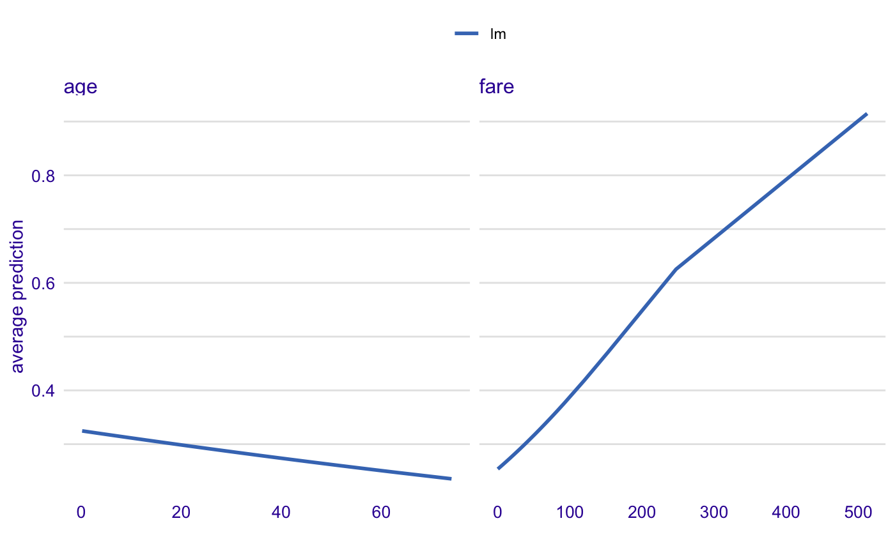
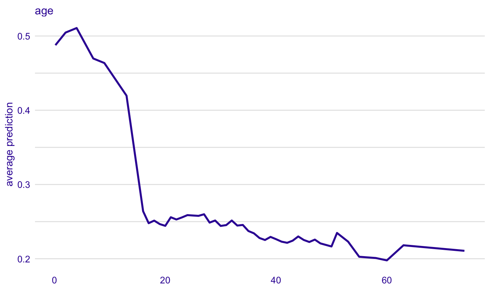

Partial Dependency Plots
Function 'partial_dependency' calles 'ceteris_paribus' and then 'aggregate_profiles'
partial_dependency(x, ...) # S3 method for explainer partial_dependency(x, variables = NULL, N = 500, variable_splits = NULL, grid_points = 101, ...) # S3 method for default partial_dependency(x, data, predict_function = predict, label = class(x)[1], variables = NULL, grid_points = grid_points, variable_splits = variable_splits, N = 500, ...)
Arguments
| x | a model to be explained, or an explainer created with function `DALEX::explain()`. |
|---|---|
| ... | other parameters |
| variables | names of variables for which profiles shall be calculated. Will be passed to `calculate_variable_splits()`. If NULL then all variables from the validation data will be used. |
| N | number of observations used for calculation of partial dependency profiles. By default 500. |
| variable_splits | named list of splits for variables, in most cases created with `calculate_variable_splits()`. If NULL then it will be calculated based on validation data avaliable in the `explainer`. |
| grid_points | number of points for profile. Will be passed to `calculate_variable_splits()`. |
| data | validation dataset, will be extracted from `x` if it's an explainer |
| predict_function | predict function, will be extracted from `x` if it's an explainer |
| label | name of the model. By default it's extracted from the 'class' attribute of the model |
Value
an 'aggregated_ceteris_paribus_explainer' layer
Examples
library("DALEX")library("titanic") library("randomForest") titanic_small <- titanic_train[,c("Survived", "Pclass", "Sex", "Age", "SibSp", "Parch", "Fare", "Embarked")] titanic_small$Survived <- factor(titanic_small$Survived) titanic_small$Sex <- factor(titanic_small$Sex) titanic_small$Embarked <- factor(titanic_small$Embarked) titanic_small <- na.omit(titanic_small) rf_model <- randomForest(Survived ~ Pclass + Sex + Age + SibSp + Parch + Fare + Embarked, data = titanic_small) explainer_rf <- explain(rf_model, data = titanic_small, y = titanic_small$Survived == "1", label = "RF") pdp_rf <- partial_dependency(explainer_rf, variables = "Age") pdp_rf#> Top profiles : #> _vname_ _label_ _x_ _yhat_ _ids_ #> 1 Age RF 0.42 0.638476 0 #> 2 Age RF 1.00 0.628636 0 #> 3 Age RF 2.00 0.598596 0 #> 4 Age RF 3.00 0.622772 0 #> 5 Age RF 4.00 0.624516 0 #> 6 Age RF 5.00 0.626440 0plot(pdp_rf)pdp_rf <- partial_dependency(explainer_rf) pdp_rf#> Top profiles : #> _vname_ _label_ _x_ _yhat_ _ids_ #> 1 SibSp RF 0.00 0.383160 0 #> 2 Parch RF 0.00 0.363668 0 #> 3 Fare RF 0.00 0.329836 0 #> 4 Age RF 0.42 0.656352 0 #> 5 Parch RF 0.49 0.363668 0 #> 6 SibSp RF 0.58 0.383676 0plot(pdp_rf)